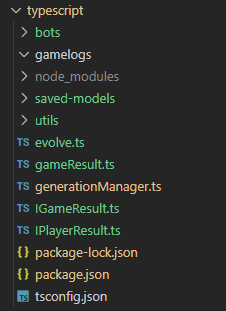

Welcome to the Bomberjam TypeScript Optimizer! In here you will find useful information about how to get started with evolving your bot!
If at any point you have questions, don't hesitate to poke me! (Joseph Henry Passineau)
Setup
You first need an already trained TensorFlow model. If you dont have one, STOP. Go to the JavaScript Starter first and train a model.
You have a trained model? You cant seem to make it better? You have come to the right place.
You do not need Python to run this starter. If you have errors that seem related to python, ignore them.
You will need to install NodeJS v12 and npm
- If you already have node installed, check the version with
node -v - If it's not 12.x, you need to update
You can download NodeJS, which comes with npm, from their official website or install it through chocolatey.choco install nodejs
Once all of this is done, run npm install
You can test that your installation worked by running npm run evolve. You might get an error because your model is different then the one you used to train your model. Thats ok.
- Sometimes, tensorflow doesn't install properly. You'll get errors when trying to import it.
- To fix this, you can run
npm run fix-tf-install-unixornpm run fix-tf-install-windows, depending on the type of terminal you are using (do you uselsordir?).
Project Structure
At the root level, you will find the following files and folders:

gamelogs/
Contains the games replay files. Simulations you run will be saved here so you can look at them afterwards.
To watch your gamelogs, you need to start the server by using npm run server.
The url for the Bomberjam UI will be displayed. Once in there, you can use the replay feature to import a gamelog file.
saved-models/
Contains the save files for your neural networks after evolving it. This is also where you can store the trained model you want to evolve. Just make sure you make a copy of it somewhere. We never know. Your bot might go instinct.

The other scripts will use your model name to find the corresponding model in here.
utils/
Code used by the starter to make your life easier. You do not need to edit this to succeed, but if you want to, you can do it.
evolve.ts
Use this to start the process to evolve your bot. This is where you should reference the model you want to use. Also, this is where you can configure the generationManager.
bots/
Very similar to the JavaScript starter. You will want to make sure that the code is identical. Yes, I know, it's written in TypeScript, so just convert your JavaScript code. It's actually really simple since pretty much everything has the same naming.
generationManager.ts
This is where all the magic happens. Here you will do all the steps of the Genetic Algorithm:
- Initialize
- Fitness
- Selection
- Breeding
- Mutation
Rince and repeat.
Pro tips
- Make sure that the Model, inputs, outputs are IDENTICAL to the one you used in the JavaScript starter
- Make sure to shuffle those bots. Some bots are better at certain position than others.
- You might want to play multiple games in a single generation.
- Look at your games! It is not because you have high score that your bot performs well.